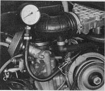

Engine doesn't start
Test conditions:
- Any mistakes in normal starting procedure?
- Is thre fuel in the tank?
- Is the starter speed normal?
Battery voltage ok?
Trouble in ignition system
Check ignition system & eliminate any defects
The following defects may be found, despite visible sparking at plug connectors:
- Dsitributor cap damp, cracked, or burnt by tracking
- Rotor arm defective
- Loose connections on coil
- Spark plug connectors defective
- Ignition timing off (bad breaker points)
- Ignition cables badly connected
- Arcing at ignition cables on distributor (through rubber caps)
- Voltage at terminal 15 on coil too low
(minimum 9 Volts when starting)
- condenser defective
Hoses off or damaged
Check hose connections
- between air intake distributor and auxilary air valve and intake manifold
- between air intake distributor and deceleration air valve
- at check valve for automatic stick shift and intake manifold
Trouble in fuel system
- Pull off hose to air intake distributor
- Check pressure in ring main with pressure gauge while starting
Specified pressure 2.5 kg/cm (35 psi)

Pressure? No pressure?